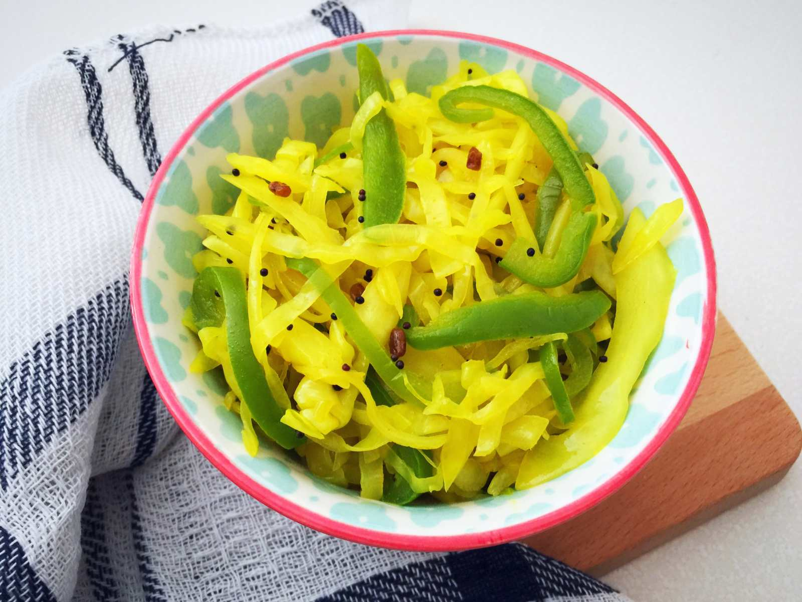

🌶️ Marcha Sambharo (Spicy Chili Stir-fry)

Ingredients
- 8–10 green chilies (slit or chopped)
- 1 tbsp oil
- 1/2 tsp mustard seeds
- 1/4 tsp asafoetida (hing)
- Salt to taste
- 1 tsp sugar (optional)
- Juice of 1 lemon
- Pinch of turmeric
Instructions
- Heat oil in a pan. Add mustard seeds and let them crackle.
- Add hing and turmeric. Stir quickly.
- Add green chilies and sauté for 2–3 minutes on medium flame.
- Add salt and sugar. Cook for another minute.
- Turn off the heat and add lemon juice.
- Mix well and serve warm or at room temperature.
Serve With
- Thepla or paratha
- Gujarati thali meals
- Khichdi
💡 Tip: For milder flavor, use Bhavnagari or banana peppers instead of regular green chilies.